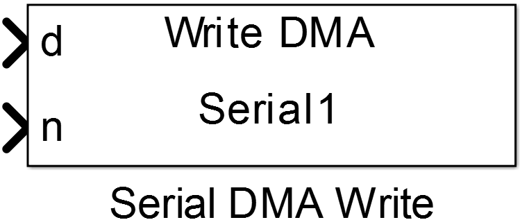
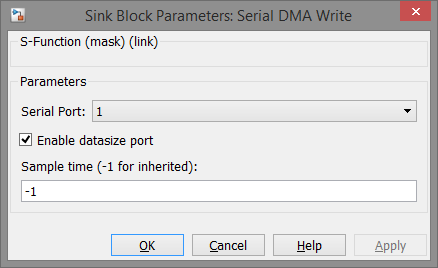

Serial DMA Write
Sends data via UART communication in non-blocking DMA mode.
Library
Targets/STM/DISCO_F407VG
Description
{kind=link}
This block uses Serial/UART hardware peripheral to send data in non-blocking mode. When the block’s code is called the data at the input port are copied into a buffer which is then used by the DMA for transmission. The number of data to send is provided either by the dimension of the input data port or through a second input port which makes it possible to send less data then the data port vector contains.
For configuration a Serial DMA Config block is needed in the model which has matching Serial Port configuration value.
Data Type Support
The data input port only supports 1-D vectors of uint8 values. The optional number of data port expects a uint32 value.
Parameters and Dialog Box
Serial Port
Selects the hardware UART peripheral of an STM32 MCU. The port number are related to the actual USART/UART numbers referred to the datasheet of the used MCU.
Enable datasize port
Provides a second input port through which the number of bytes to be send can be configured during program execution.
Note
The number of data have to be less then or equal the length of the input data port.